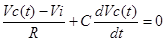
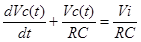
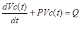
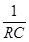
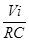
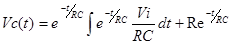
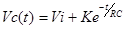
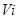
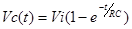
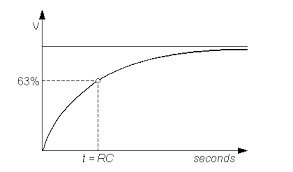

To study the step response of a series RC circuit
The main physics behind the experiment can be given as:


THEORY:
This is of the form-

Where P = 
and Q = 
Solution of which is

K is constant of integration

At t=0, Vc(t) =0 (Since capacitor
is uncharged initially)
K= -
Hence

At t=RC (when the power of exponent becomes unity)
Vc(t) = * (1-0.368) = 0.632 *
At t= RC capacitor gets charged to 63.2%of final voltage. Therefore RC is called time constant and nominated by Г .It is defined as time at which response reaches 63.2% of its final value. The graphical representation of charging of capacitor with time is shown in Fig. (2) at steady state charging current for capacitor through resistance reaches zero and capacitor gets charged fully at supply voltage volts.
